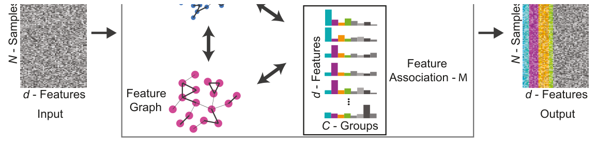
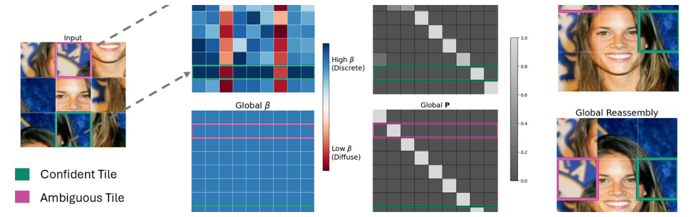
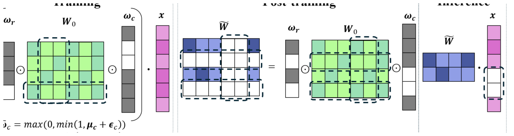
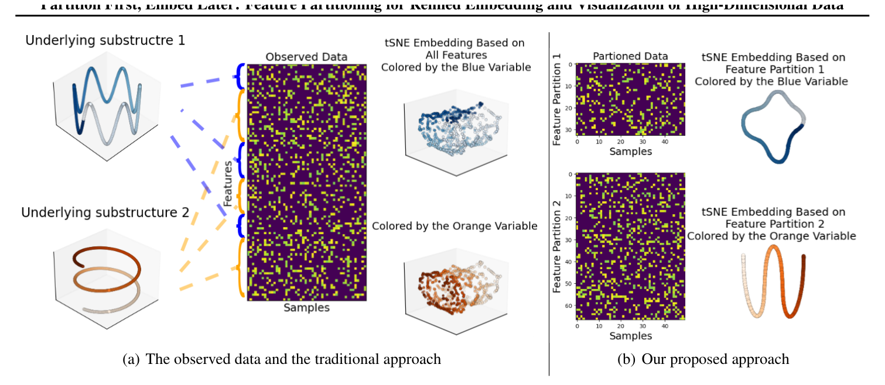
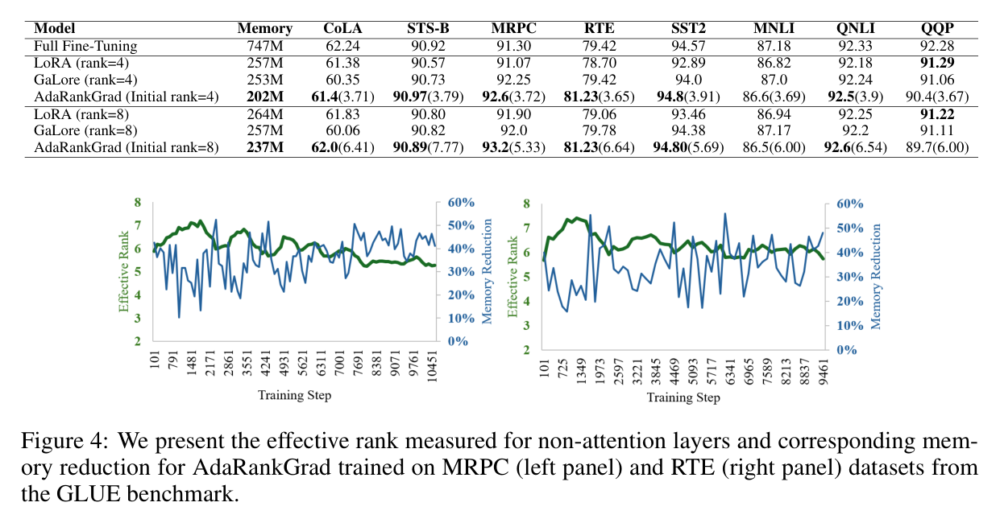
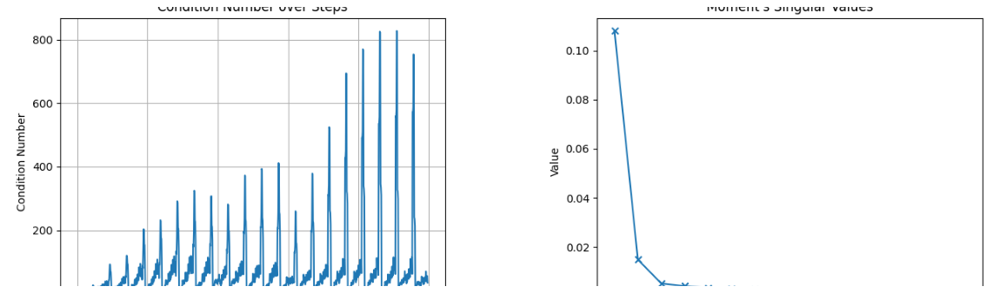
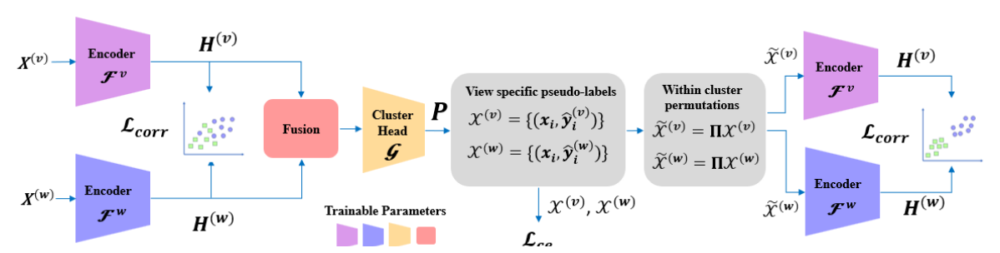
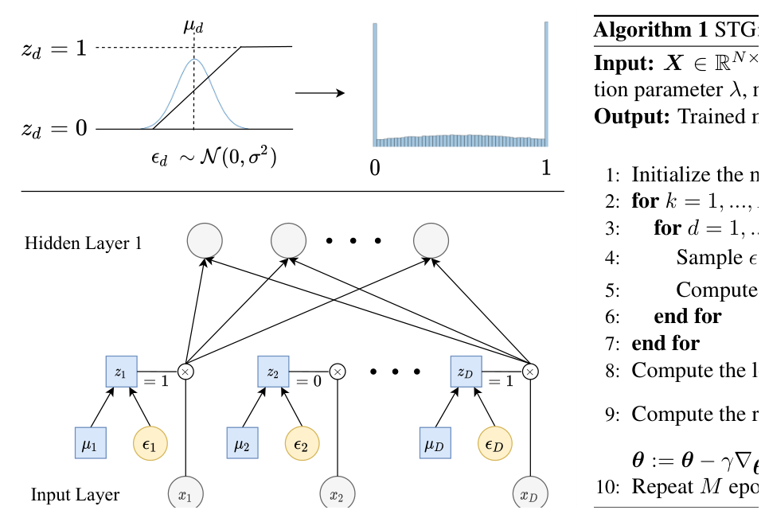
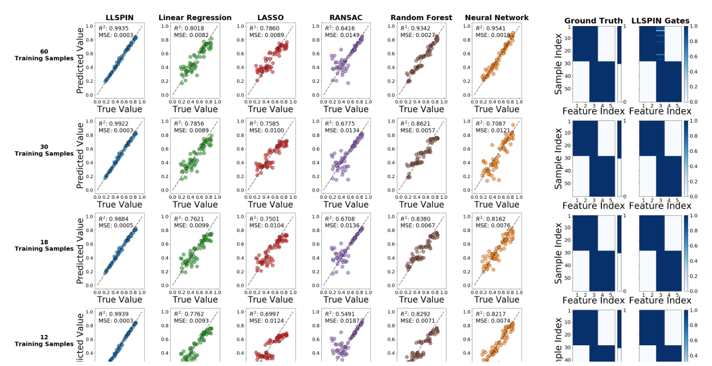
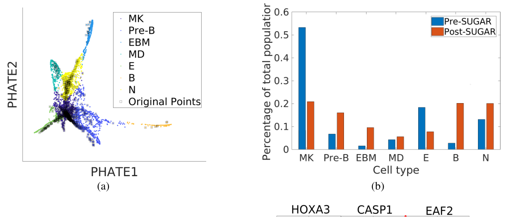

Publications
Group highlights
For a full list see below or go to Google Scholar.

Unsupervised Feature Selection Through Group Discovery
GroupFS jointly discovers feature groups and selects the informative ones without labels, turning feature selection into a structured, graph-smooth learning problem.
AAAI 2026 Oral

Learning Permutation from Structure Without Supervision
An entropy-adaptive Gumbel-Sinkhorn formulation learns hidden orderings from structural objectives, sharpening confident assignments while leaving ambiguous ones flexible.

Train Less, Infer Faster: Efficient Model Finetuning and Compression via Structured Sparsity
The method learns structured row and column gates that sparsify foundation models during adaptation, reducing inference cost while keeping the base weights frozen.

Partition First, Embed Later: Locally Linear Manifold Embedding of Partitioned High-Dimensional Data
A feature-partitioning step separates mixed signals before embedding, revealing local low-dimensional structure that can be blurred by a single global projection.
ICML 2025 Oral

AdaRankGrad: Adaptive Gradient Rank and Moments for Memory-Efficient LLMs Training and Fine-Tuning
AdaRankGrad tracks the effective rank of gradient updates and allocates low-rank optimizer memory where it is useful, making LLM training and fine-tuning lighter.

SUMO: Subspace-Aware Moment-Orthogonalization for Accelerating Memory-Efficient LLM Training
SUMO orthogonalizes optimizer moments inside a dynamically adapted low-dimensional subspace, accelerating memory-efficient LLM training beyond low-rank savings alone.

COPER: Correlation-Based Permutations for Multi-View Clustering
COPER aligns views by learning within-cluster permutations from correlation structure, producing stronger shared representations for multi-view clustering.
ICLR 2025 Spotlight

Feature Selection Using Stochastic Gates
Stochastic Gates make feature selection differentiable: each variable receives a learnable noisy gate, so compact and interpretable subsets emerge during training.

Locally Sparse Neural Networks for Tabular Biomedical Data
Local sparse subnetworks choose different variables for different samples, preserving predictive accuracy while giving sample-specific explanations in tabular biomedical data.
ICML 2022 Spotlight

Geometry-Based Data Generation
A graph-geometry view of augmentation generates samples that preserve manifold neighborhoods, improving downstream recovery of latent biological structure.
NeurIPS 2018 Spotlight
Full List of publications
Complete bibliography merged from Google Scholar and DBLP. Published versions replace matching preprints when available.